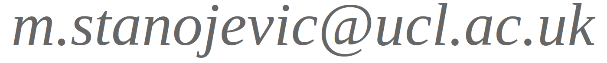
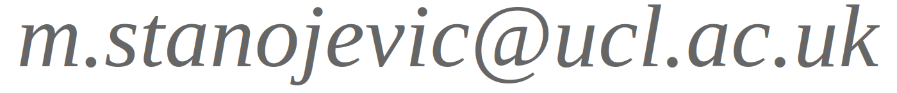

|
Miloš StanojevićLecturer at University College London
 |
|
Miloš StanojevićLecturer at University College London
 |
I work in the area of computational linguistics—what that means is that I am trying to find the computational machinery needed for producing and understanding natural languages. That involves discovering how is language represented, processed and learned both by humans and machines. Naturally, it also has a great number of important practical applications. Here is a non-exhaustive list of topics I'm interested in:
| favorite editor | |
| favorite algorithm |  |
| favorite programming language |  |
| favorite band | |
| favorite TV show | |
| favorite OS |